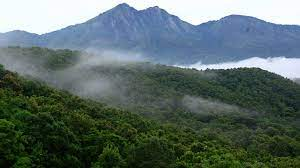

PALAKKAD
Palakkad, or Palghat, is a city in Kerala, a state in southwestern India. The 18th-century Palakkad Fort has sturdy battlements, a moat and a Hanuman temple on its grounds. North, on the Kalpathy River, the 15th-century Viswanatha Swamy Temple is the main venue of the famous Ratholsavam chariot festival. Northeast, near Malampuzha Dam, the town of Malampuzha has a rock garden created from recycled materials.

SILENT VALLEY
Silent Valley is located in the South-western corner of Nilgiris. The whole Park is a roughly rectangular tableland closed on all sides. It has high and continuous ridges along its entire east, north and northeast borders and a somewhat lower ridge along the entire western and southern border. Along its entire length, the plateau slopes toward the bed of Kunthipuzha, which divides it to two halves. The terrain is generally undulating with steep escarpments and many hillocks. The elevation ranges from 900 M to 2,300 M above MSL with the highest peak at 2,383 M (Anginda peak).
There is considerable variation in climate due to change in elevation from plains to the Ghats where hills are drier and cooler; the plains are humid and hot. The prevailing winds are from the west and south west during the period April to September and from east during the period October to March. There are occasional thunder storms in April and May. Both the south west monsoon and the north eastern monsoon cause rains in this area